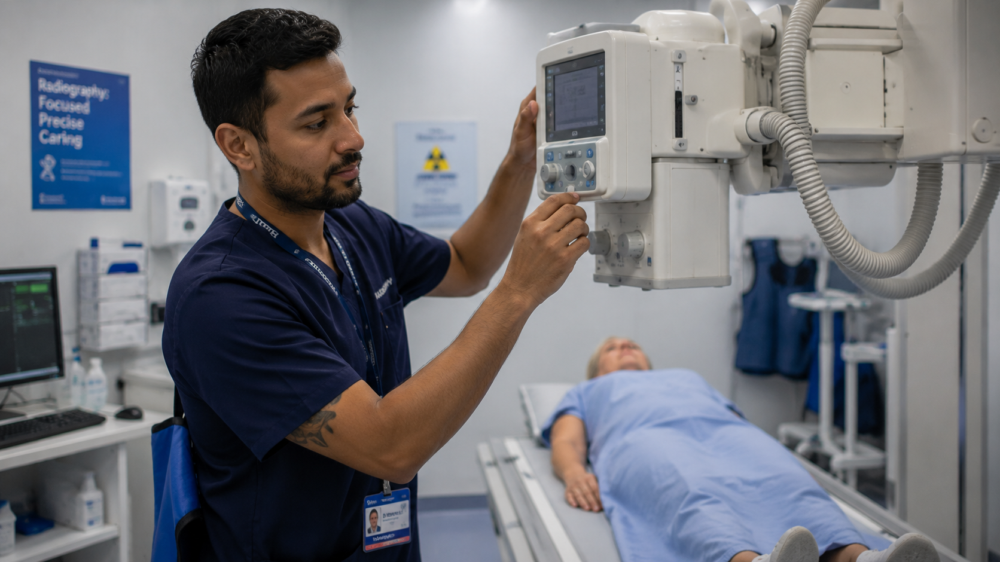

Career guide · Medical imaging · New Zealand
Radiographers in New Zealand register as medical imaging technologists.
Broader caseloads and a steadier pace than most posts you would be leaving — with one exception that decides everything: MRI sits outside the general scope.
RegistrationMedical Radiation Technologists Board
PathwayAEWV, then residence pathways
Right nowSee current roles
Roles · New Zealand
Current opportunities
Roles we're recruiting for right now. If none is quite right, register your interest and we'll be in touch when something fits.
Essential
What actually matters, in five minutes
Seven questions that decide whether this move is worth exploring — answers first. The full detail sits one click below, and nothing has been removed.
Can I work there?Yes — with MRTB registration
The Medical Radiation Technologists Board assesses your qualification and recent practice; you register as a medical imaging technologist. Well-trodden from the UK, South Africa, the UAE and beyond — supervised practice only where the assessment asks for it. The Board decides, not us.
Check my pathway →What could I earn?One national scale
Public MIT pay is set by the APEX collective agreement — the rate in Invercargill is the rate in Auckland, and your step is a matter of record rather than negotiation. We read your step from the signed agreement before you decide anything.
How pay is set →Where are the jobs?Nationwide, steadily
Consistent demand across public departments and private imaging groups — from subspecialised tertiary centres to provincial hospitals where you cover everything the hospital images.
See current roles →What will the work be like?Wider than you’re used to
Cross-modality weeks are normal: plain film and CT as the backbone, with theatre, mobile, trauma and often DEXA around them. MRI is its own registered scope, and reporting stays with radiologists.
The work itself →Can I bring my family?Yes — most people do
Partners and children can usually join you on visas linked to yours, and partners can usually work. Schools, childcare and the family logistics are explained once, properly, in the family guide.
Family moves, explained →What will moving cost?Budget for real fees
Board registration NZ$922 plus NZ$510 for the first practising certificate, visa fees for everyone moving, flights and shipping. Some employers contribute to relocation, some don’t — we get whatever is offered in writing.
The move, costed →How long could this take?Months, not weeks
Registration and the visa run largely in parallel, and document verification is usually the slow part — start collecting evidence of recent practice early. First conversation to first shift realistically spans several months.
The journey, sequenced →Want the detail? Dig deeperWhy New Zealand, the work itself, registration in full, where people get stuck, scope, CT & MRI, pay, a typical week, what might not suit you and the FAQs — everything, one click down.

Why New Zealand
Imaging is busy everywhere, but here it’s busy in a way that works
New Zealand needs medical imaging technologists, and that need shows up in well-run departments, modern equipment and lists that leave room to do the job properly.
- Strong demand across the country
- Modern, well-equipped departments
- A steadier, more manageable pace
"It’s busy, but it’s a pace you can actually sustain."
Outside of work, the trade is just as clear: shorter commutes, the outdoors close by, and a culture that values balance.
What the work is actually like
You register as a medical imaging technologist — and the title change is a scope change
Imaging itself travels well. How the profession is drawn here does not, and three things tend to surprise people in their first year.
The scope is drawn wider than UK-style radiography. New Zealand registers the profession as medical imaging technology, and most people you work with will call you an MIT. That is not just a naming difference. The scope you register into covers plain film and CT, but also fluoroscopy, theatre and mobile work, trauma, and in many services DEXA as well. Working across several modalities in the same week is normal here rather than a specialism you apply for.
How big the service is decides the shape of your job. In the main centres you will walk into a department that feels familiar: subspecialised rooms, dedicated modality teams, students on placement. In a provincial hospital you might be one of a handful of MITs covering everything that hospital images, on your own overnight, with the radiologist reporting from somewhere else. That is more independence and more decisions at the machine than most people expect, and it is the single biggest reason to be clear about which kind of department you actually want.
Reporting stays with radiologists. If you have been building a career towards a reporting qualification, check this before you commit. Reporting-radiographer posts are not an established route here in the way they are in the NHS. Advanced practice runs instead through modality depth, protocol and image-quality leadership, teaching, and clinical lead roles — real progression, just a different ladder.
"You do more, in more rooms, with fewer people around you."
None of that is a warning. Most MITs tell us the breadth is the best part of the move. It just means choosing your department with your eyes open, and we will be straight with you about which services will stretch you and which will steady you.
Getting registered
Registration overview
Reviewed July 2026 · checked against the Medical Radiation Technologists Board’s current published guidance
To practise in New Zealand you'll register with the Medical Radiation Technologists Board (MRTB). For most internationally trained MITs the process is well-established, and we’ll guide you through it.
The Board assesses your qualification, clinical experience and competency against New Zealand standards. As part of the process you'll typically need:
- Verification of your qualification
- Evidence of recent clinical practice
- A police / criminal-history clearance
- Confirmation of English-language proficiency, if required
Once registered, you’ll hold an Annual Practising Certificate (APC). We support you from understanding your pathway through to securing the right role.
Registration pathways
Your route depends on where you trained and how closely your experience aligns with New Zealand standards.
Qualifications-assessed pathway
The common route for MITs trained overseas, with qualification and experience assessed against New Zealand standards.
Comparable-country pathway
A more streamlined route for those from recognised comparable systems, still meeting the Board’s core requirements.
Everything in one place
Your registration resources, all on one page
Read the Board's own registration guide, work through the checklist, then go straight to the people who register you.
Registration application guideEthicare guideRegistration checklistEthicare guideMedical Radiation Technologists BoardOfficial registration website
Prefer a download? Registration guide (PDF) · Checklist (PDF)
Registration checklist
What to gather before you apply to the MRTB:
- Certified copies of your qualifications
- Evidence of recent, relevant clinical practice
- A certificate of good standing from every authority you’ve registered with
- A police / criminal-history check
- Proof of identity, plus any name-change documents
- English-language evidence (IELTS or OET), if required
- One personal and one professional referee
- Your application fee, ready at submission
Advice & notes
Start early
Gathering documents before you apply is the single best way to avoid delays. Missing paperwork is the most common hold-up.
Mind the dates
Certificates of good standing and certified copies have a short validity window, so time them so they’re still current when you submit.
Then your visa
Apply for your visa once you have a job offer. We’ll guide the order so nothing happens out of sequence.
You’re not on your own
We’ll review your documents with you before you submit, and stay alongside you through every step.
Where people get stuck
Three delays, and all three are avoidable
Applications rarely fail. They stall — and almost always on the same three things, none of which is the clinical assessment.
Verification from a regulator you last spoke to in 2011
The Board needs verification of registration from every regulator you have ever held, not just your current one. It is the slowest item on the whole list, because it depends on somebody else’s office in another country having no reason to hurry. Start it in week one, before anything else.
Certification done the wrong way, twice
Who may certify a copy, and how the certification must be worded, is specific. People pay a notary, submit, are told it is not accepted, and pay again. Read the requirement before you book the appointment rather than after.
Assuming registration means you can start
It does not. You also need an Annual Practising Certificate, and that is a separate application once registration is granted. People book flights against the registration date and lose a fortnight at the other end.
Scope of practice
Broad general imaging, with room to go deep on a modality
MIT scope here covers more ground than a typical overseas radiography post, and the smaller the service, the wider your day.
Day to day that usually means plain film and CT as the backbone, with fluoroscopy, theatre and mobile imaging, trauma work and often DEXA around them. Rotation across modalities is expected rather than negotiated, and in regional services you may be the only person on site covering all of it.
Sonography and MRI sit in their own registered scopes. Moving into either means adding a qualification and a scope with the Board, not simply rotating onto a different roster. Plenty of MITs do exactly that, usually with employer support, but it is worth knowing it is a formal step rather than an internal move.
Progression comes from depth and leadership. Senior MIT and charge roles, modality lead positions, protocol and quality work, CT and MRI specialisation, teaching and student supervision, and applications or PACS roles are the routes people take. Departments here are generally good at funding postgraduate study for someone who has committed to the service.
Whatever you already do well travels with you. Send us your modality history and how recent it is, and we will tell you honestly which services will take it as-is and which will want you broader.
CT, mammography and MRI
One job title, three different answers on scope
Candidates ask about these three together, so they are answered together — but the regulator does not treat them the same way, and the difference decides what you may do on day one.
CT
Inside the MIT scope
Computed tomography sits within the medical imaging technologist scope, alongside mammography and angiography. No separate registration, and in most services CT is the backbone of the week rather than a specialism you apply for.
Mammography
Inside the MIT scope
Also within the MIT scope. Screening and symptomatic work are usually service-specific rather than scope-specific, so the question to ask a department is what training and caseload it offers, not whether you are permitted.
MRI
Its own registered scope
Magnetic resonance imaging is a separate registered scope in New Zealand, not a modality inside general imaging. Practising in it needs registration in it — not experience alone, and not a manager’s sign-off.
If MRI is your whole job, the trans-Tasman exclusion matters more than anything else on this page. Mutual recognition between Australia and New Zealand covers the medical imaging technologist, radiation therapist and nuclear medicine technologist scopes. MRI and sonography are excluded — so an Australian-registered MRI technologist applies as an internationally qualified applicant, and a timeline built on mutual recognition will be wrong by months.
There is a published experience route into the MRI scope. A Board-approved undergraduate qualification in medical imaging or radiation therapy, at least 2.5 years full-time equivalent of MRI practice meeting the Board’s clinical experience requirements, and a pass in a Board MRI examination. If you came to MRI from a general radiography background rather than a dedicated MRI qualification, that is the route to read properly.
An examination is not automatic. Where the Board decides a qualification is not equivalent it may in some circumstances offer an examination, but whether one is offered is the Board’s decision on your application rather than a right you can plan around. Board fees are published: NZ$922 to register, NZ$510 for the initial practising certificate, and NZ$2,704 for the online examination where required.
If your MRI is a sideline of a general list, the MIT scope is usually the right application and MRI a later addition. If it is the whole job, apply for the MRI scope and plan for the longer assessment. Getting that decision right is the single fastest thing you can do.
Where this comes from. Scopes, the trans-Tasman exclusions, the MRI experience route, the examination policy and the fee schedule are the Medical Radiation Technologists Board’s own published guidance and its Gazette scope notice, read in August 2026. Check your own case with the Board before you make a decision on it.
Pay & benefits
How pay is set
One national scale, not a regional lottery. Public MIT pay comes from the APEX and Te Whatu Ora medical imaging technologists’ collective agreement, which runs 1 July 2026 to 30 June 2028 — so the rate in Invercargill is the rate in Auckland, and your step is a matter of record rather than negotiation.
Public sector
APEX national scale
A transparent, step-based scale covering every public imaging department. We read your step from the signed agreement and confirm it for the specific role before you decide anything.
Private imaging
Sets its own rates
Private imaging groups sit outside the collective agreement and set their own pay. Rates vary by provider and by modality — CT and MRI skills carry the most weight.
On top of base
Loadings & leave
Overtime and penal rates, on-call provisions, higher-duties and night-shift allowances; four weeks’ leave (five after five years), and your APC usually reimbursed once you start.
Relocation
Varies by employer
Some employers contribute towards the move, others don’t, and neither is unusual. We ask on your behalf and get whatever is on offer confirmed in writing before you decide.
We haven’t printed a band on this page on purpose. The MIT scale is published inside the agreement as a scanned table rather than text, so we won’t quote a figure we can’t yet cite line by line. Ask us and we’ll read your step from the agreement itself. You can check which agreement covers you on the pay agreements register, or read how pay works in New Zealand.
The difference that shapes the work
Why MITs tell us the work feels different here
Modern kit, manageable lists, and departments that invest in their people.
Modern equipment
Manageable lists
Cross-modality experience
Support for development
Public and private options
A real work-life balance
A typical week
What your day-to-day can look like
Your week varies by department and modality, but most MITs enjoy variety and a steady, sustainable rhythm.
- Performing imaging across your modalities
- Producing high-quality diagnostic images
- Working closely with radiologists and referrers
- Supporting students and junior colleagues
- Maintaining safety and quality standards

Ethicare insight
Imaging is in steady demand across New Zealand, so MITs usually have real choice over where they settle and which modalities they focus on.
The clinical transition from comparable systems is generally smooth: the differences are mostly in how departments are run and the pace of the day, not in the imaging itself.
SophieCEO & Founder, Ethicare Resourcing
What might not suit you
The reasons people decide against it
What we hear from radiographers who looked at New Zealand and chose not to come, and from those who came and found it harder than they expected. All of it is better known now than in month nine.
You are a long way from everyone
A day of flying to Europe, and expensive. Aging parents, a sibling’s wedding, a funeral — distance is the single most common reason people go home.
Housing costs more than the salary suggests
Particularly in Auckland. The pay scale is national; the rent is not. Run the numbers against two named places before you decide the move is affordable.
Your partner’s career is the harder half
Yours has a regulator and a route. Theirs may have a smaller market, a different registration body, or neither. Two careers, two timelines, and the second is usually the one that decides it.
The costs land before the first pay run
Assessment, registration, the practising certificate, visa, flights, shipping and a rental bond arrive close together, and mostly before any money comes in.
Those are reasons the move might not be right for you. The limits of what we can promise — timelines, a specific job, a supervisor at the other end — are set out once, on what we can’t promise.
The rest of the move
Everything that isn’t about your profession
Visas, how the countries compare, where in the country to live, and the eight stages from first conversation to first shift. We cover each of those once, properly, rather than repeating them on every role page.
Common questions
Frequently asked
I'm HCPC-registered in the UK. Does that transfer to the MRTB?
Not automatically — you apply to the Medical Radiation Technologists Board, and they assess your qualification, your recent clinical practice and your competency against New Zealand standards. UK training is well recognised and most UK radiographers come through this route without difficulty — and the same pathway applies wherever you trained, whether that’s South Africa, the UAE or elsewhere: the Board assesses your qualification and recent practice, not your passport. What takes the time is document verification and getting your evidence of recent practice in order, so start collecting it early.
We help you work out which pathway applies and what the Board will want to see before you spend money on an application.
Will my Australian registration count?
There is a trans-Tasman recognition arrangement between the two countries, and in practice AHPRA-registered radiographers usually have a quicker route than someone applying from further afield. It is still an application to the Board rather than an automatic transfer. Tell us where you are registered and we will confirm what applies to you before anything is submitted.
What does "general radiography" actually cover here?
More than the phrase suggests. Plain film and CT will be your backbone, with fluoroscopy, theatre and mobile work, trauma and often DEXA around them. In a provincial hospital, general means genuinely general: whatever comes through the door on your shift, frequently with you as the only technologist on site.
In the main centres the day is more contained, closer to a large overseas department.
Can I stay in one modality — MRI or CT only?
In the main centres, largely yes. Tertiary departments run dedicated CT and MRI teams and people do build whole careers in one. Bear in mind that MRI is its own registered scope, so a pure MRI role means holding that scope rather than just being rostered there.
In smaller services it is not realistic. The department needs everyone able to cover everything, and that is exactly what makes those roles good for building breadth.
I want to move into reporting. Is that possible?
We will be honest with you: not in the way you are thinking. Reporting sits with radiologists here, and reporting-radiographer posts are not an established part of the workforce as they are in the NHS. If a reporting qualification is the point of your next five years, New Zealand may not be the right move, and we would rather say so now.
If what you want is more clinical responsibility, the routes here are modality expertise, protocol and quality leadership, teaching, and senior or charge roles. Several MITs also contribute to image interpretation informally within their teams. It is a different ladder, not a shorter one.
What are regional and rural roles really like?
Busier in scope and quieter in volume. You will cover more modalities, make more decisions on your own, and get to know the clinical teams properly. On-call is usually part of it, and the radiologist may be reporting remotely rather than sitting down the corridor.
Before you accept one, ask three things: how often you are on call, who you can phone at three in the morning, and what support the service gives for postgraduate study. We push on all three during offer discussions.
Nau mai, haere mai · If you’re weighing it up
We'll be with you throughout
Relocating to a new country can feel overwhelming at times, and you won't be doing it on your own. Tell us where you trained and what you're weighing up, and we'll help you think it through.
Ethicare Resourcing · your guide to a life and career in New Zealand.